4. Travel through the West of Spain and annexed Portugal
4. Travel through the West of Spain and annexed Portugal
September 9 to 13, 2021
Day 5, Hervas to Toledo, passing through the Jerte valley
September 13, 2021


74. Hervás
74. Hervás
In the morning I left for Hervas, one of the most beautiful towns in Spain. It has a well-kept historic center with one of the largest Jewish quarters in a town in Spain. The streets keep the original irregular layout and many houses keep Jewish marks or symbols such as 7-arm chandeliers or stars of David. This entire area was home to a large Jewish population that remained on the peninsula despite the expulsion by the Catholic kings. It also has a very old medieval bridge from the Visigothic era and even earlier.
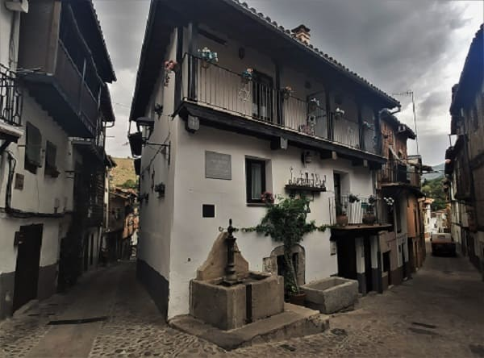
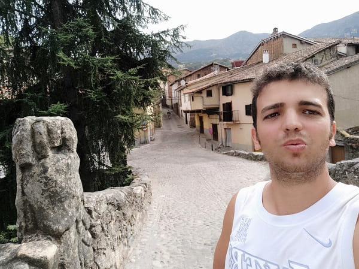
The Plaza Mayor has bars and restaurants around it, and it is not very big, a size in keeping with the population of the city that it once had. The town hall is located in the building that was occupied by an old Franciscan monastery of which the patio and some elements remain today.
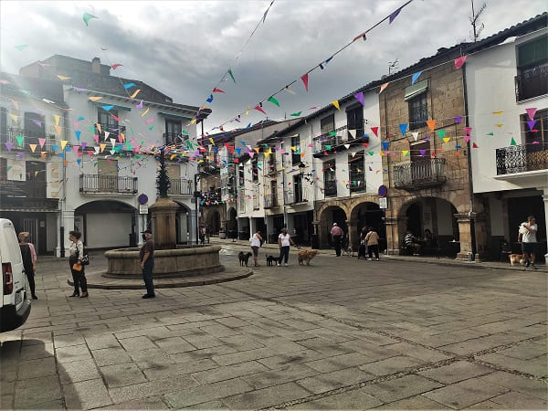
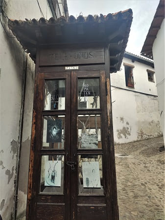
There is also a car and classic motorcycle museum.
On the religious side, the convent of the Trinitarians, a 16th-century building in the Renaissance style together with its church.
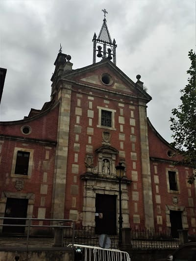
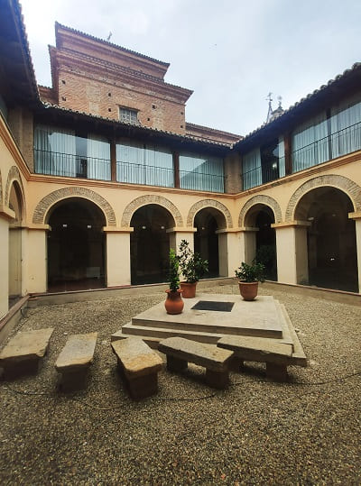
The church of Santa María, which is at the top of the Renaissance style of the 17th century. Due to its defensive position, it was very surely built in the place where the castle of Hervas was located. Today only the walls and the views from above where you can see the river and the medieval bridge remain. Finally, there is a small cactus garden from a private house that can be seen with a very extensive variety of different species.
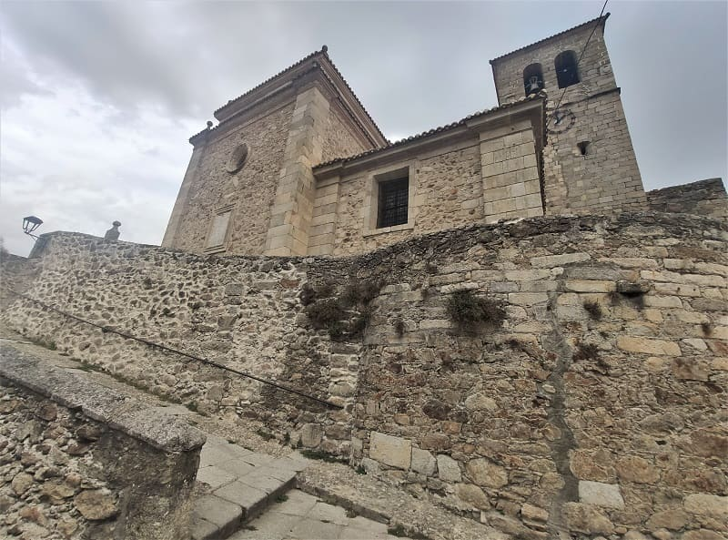
This medieval bridge that crosses the Ambroz river is one of the oldest elements, possibly from before the 12th century and one of the most photographed elements.
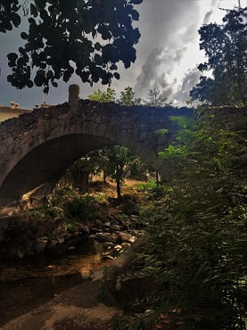
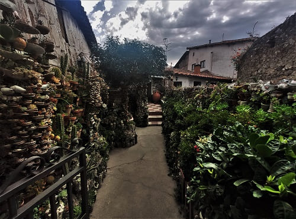

75. Béjar
75. Béjar
Then I would go to
Béjar which is a little further north, a much larger and more important town, which can be considered a city. It has more than double the population of Hervas and from the same period. There is evidence of its origin from the 13th century. It is from the fifteenth century when Béjar becomes more important, being the Zuñiga family the ones that have the power and will be given the title of Dukes of Béjar. Unlike Hervas, this city had a bad deal with the Jews since it took advantage of the expulsion of the Catholic kings to steal their property.
Béjar, unlike Hervas, preserves the medieval wall much better, it is also superior since it was close to the border with the Arabs before the capture of such important cities as Cáceres, Mérida or the impregnable Badajoz, which at that time was one of the most important cities. important Muslims of the peninsula. This wall can be walked almost completely.


In the center of town is
the town hall and the ducal palace of Béjar, which is today a secondary school. The original construction of the 16th century palace was a rectangular castle with towers at the corners that must have been built at the same time as the city walls, with the Christian repopulation of the city. Its plateresque style patio stands out.
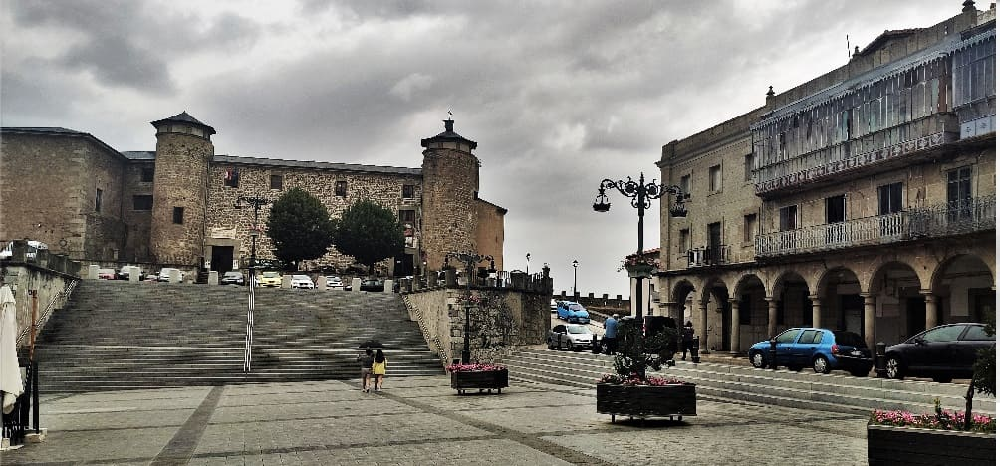

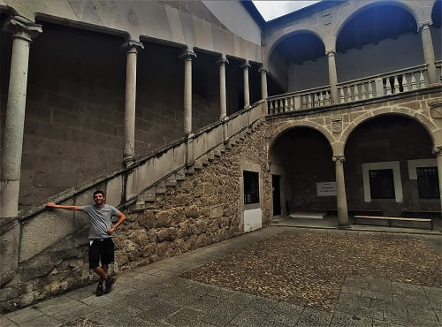
In the other part of the city is
the church of Santa María la Mayor, from the end of the 13th century in a transitional style between Romanesque and Gothic. Much of the church suffered a fire in the civil war in which the altarpiece would be lost.
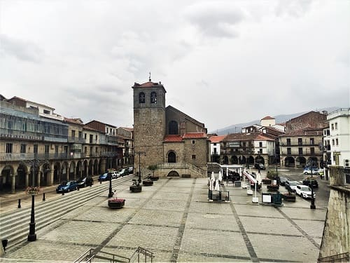
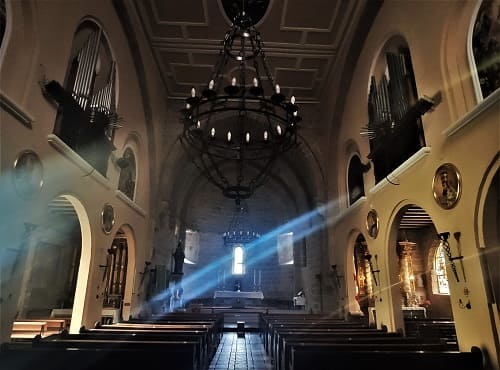
Another of the attractions of Béjar is its museum, by Valeriano Salas, located inside the
old convent of San Francisco where you can see the remains of monuments found in excavations in the area, and enter in the plateresque courtyard of the convent. This building today belongs to the town hall and also functions as an exhibition hall and library.
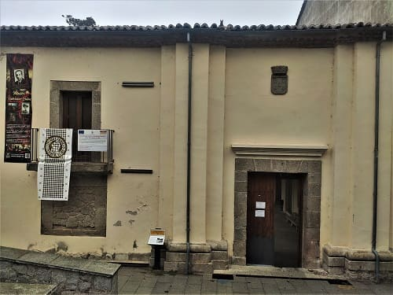
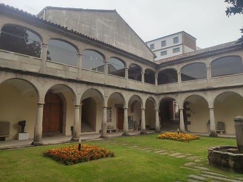
Another of the
churches, El Salvador, larger than the 13th-century Gothic-style church of Santa María. It had a very careful interior with baroque decoration that was lost due to a fire in the civil war, just like the other church.
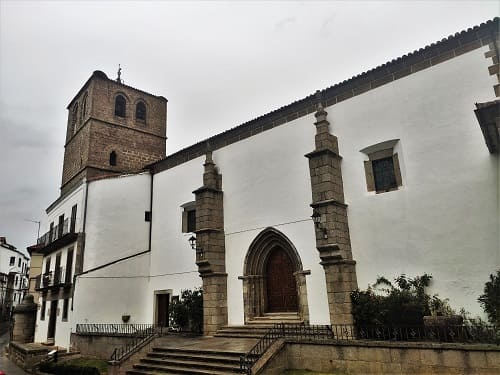
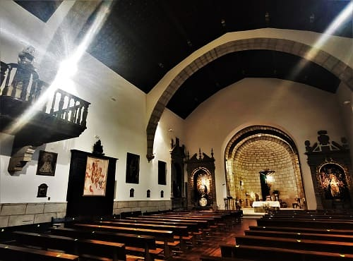
Finally, stroll through its narrow streets and see
the Jewish quarter where there is a museum, in the image. Also see the Cervantes theater building. There is also a statue dedicated to
the man with the moss and it is a tradition to dress up in this way at the Bejar festivities and walk through the streets.
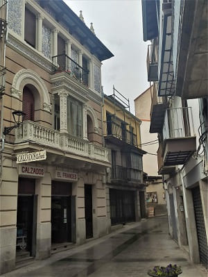
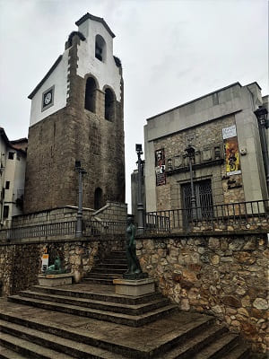
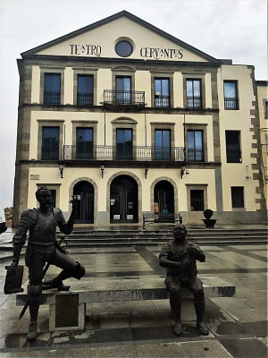
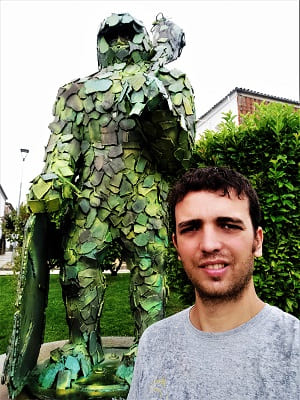

76. Jerte
76. Béjar
Having seen Béjar, I could either go to Toledo retracing my steps or go up the road to Ávila and then go back down to Cáceres and see the towns of the Jerte valley, visiting the town of Jerte itself.
For that I had to cross through the port of Tornavacas, where the road is two-way and where there are enough curves to first reach
Jerte, a town located around this road that has the typical architecture of this area with its main square and its corresponding church.
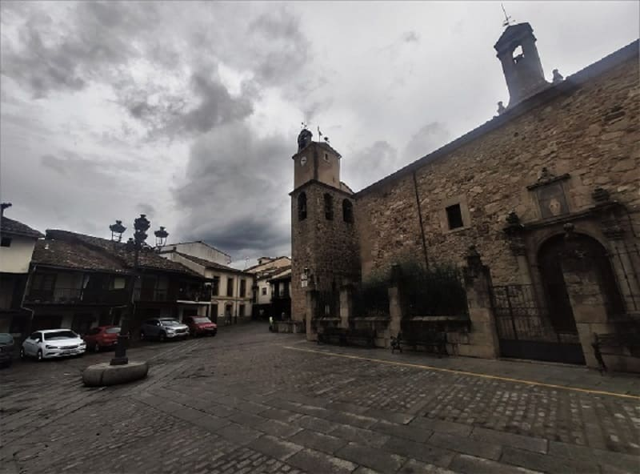
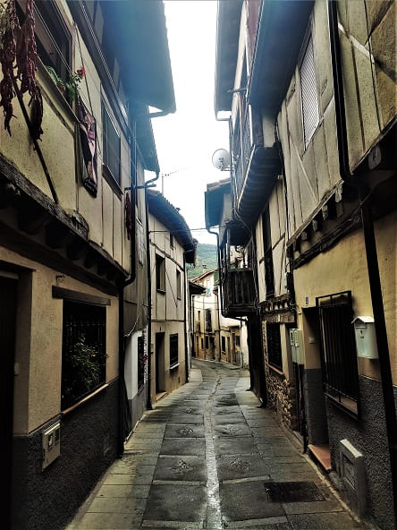


77. Cabezuela del Valle
77. Cabezuela del Valle
Further down, I would visit
Cabezuela del Valle, whose stone-built houses and wooden balconies also preserve the charm of the town.
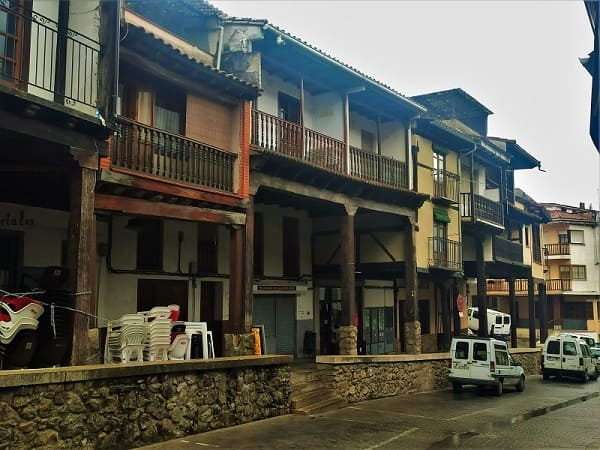
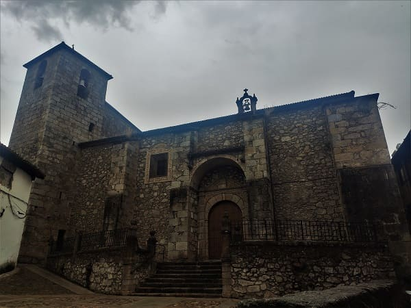


78. Piornal
78. Piornal
Then I would go up a whole mountain pass until I reached the highest town in all of Extremadura,
Piornal, which is at an altitude of 1200m. The town has a church and a fountain that are very typical of the area, as well as a fountain in Plaza Eras that is decorated with lions and is quite old. This town has one of the most unique festivals in Extremadura, called the Jarrasplas, a figure wearing a hat with horns and a multitude of colors that since ancient times has been in procession through the town once a year and in which the residents have to throw turnips and other vegetables at them as punishment for stealing cattle or vegetables from gardens. More and more people come from further away and that is why they have been provided with a good armor in recent times of fiberglass or carbon. There is even a museum with the oldest and most curious Jarrasplas costumes. In the photos,
the statue paying homage to Jarrasplas and the fountain of the Wolves.


The church of San Juan de Piornal dated from the 14th century but was almost completely rebuilt except for the tower which dates from the 17th century. On the other hand I show the main square of the town.
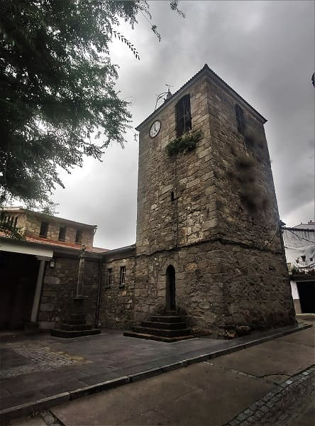
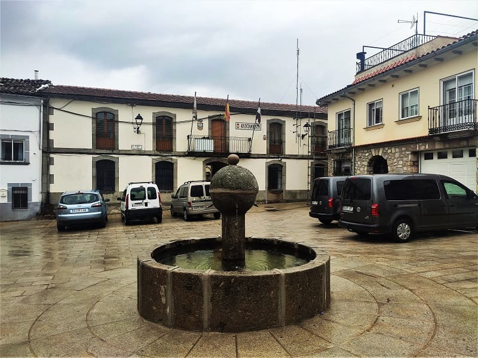

79. Pasarón de la Vera
79. Pasarón de la Vera
The next town would be
Pasarón de la Vera. The name of the town comes from the root pas-xaran, valley of passage. Since it was a passing town in the region of La Vera.
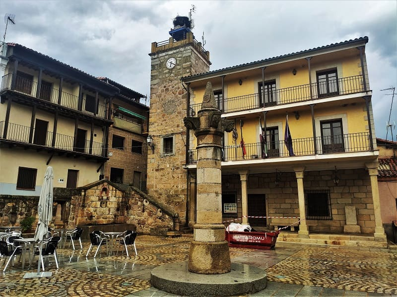
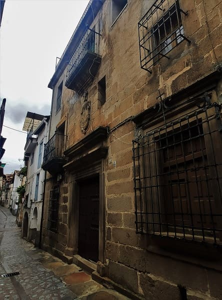
The Church of El Salvador in Pasaron is one of the best, if not the best, in the region of La Vera. It is cataloged as BIC for its historical-artistic importance. It is from the 16th century, and it is quite large. The last thing to be built would be the sacristy. It has a 16th-century Gothic-style main chapel. The church has Renaissance features as it progressed towards the 16th century, like the chapel of Luis Prieto, which is one of the important parts.
The altarpiece is in the Baroque style following the Churrigueresque model, that is to say, a very ornate Baroque style model. This altarpiece is from the 18th century and when I arrived in 2022 I would speak with the priest of the church who came from Plasencia. He told me that it was recently restored and cleaned as you can see in the photograph. In addition, during the cleaning, a polychrome had appeared on the side, behind a chapel that could be like the last judgment.
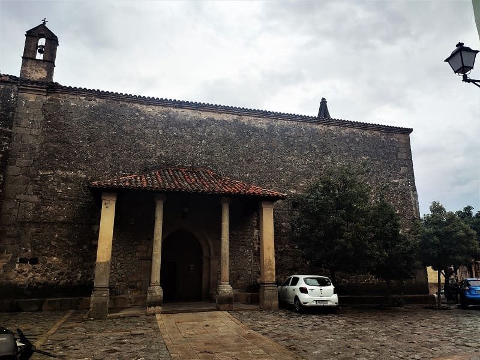

It also has a unique little-known building such as
the Palace of the Counts of Osorno. This 16th century building has elements of the Italian Renaissance, superimposed by a typical Mudejar style of the area. It belonged to the Manrique de Lara family, who was very close to Carlos V. Finally, I show an image of the hermitage of Cristo de la Misericordia from the 18th century.
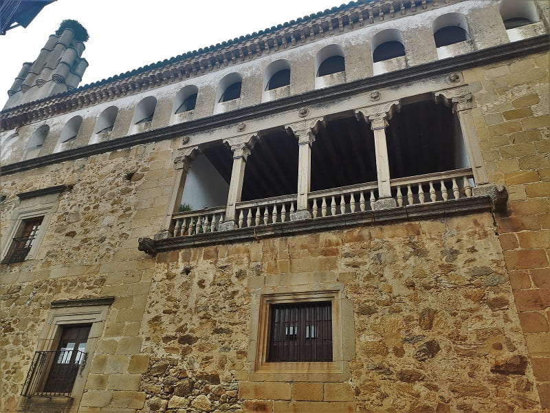
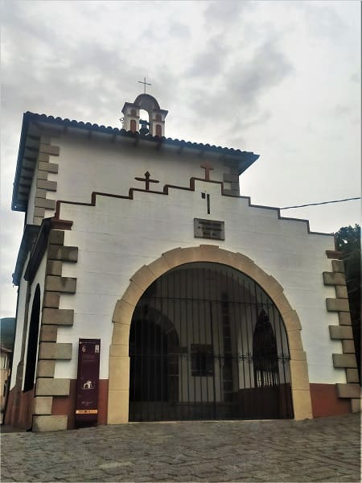

On the way to Jarandilla, I would pass through a town much larger than all seen in the Jerte region, Jaraiz de la Vera and I would see the pillory of the town, from the 17th century, one of the oldest praises in the area that demarcates the importance of the town , but there was no time to visit the town.

80. Jarandilla de la Vera
80. Jarandilla de la Vera
Lastly, I would arrive at
Jarandilla de la Vera, where I parked near the Parador, at the spring of the emperor's veneration. Before going up to the castle, he would see the town. The first thing you see is a very large square where there is a Renaissance church from the 17th century, San Agustín.
In the Plaza Mayor is the town hall, and
the church of Nuestra Señora de la Torre. This church is very curious because it was born from the tower that was possibly of Roman origin and that after the reconquest the church and the bell tower would be added to the tower. The interior is Renaissance and the Baroque altarpiece. Next to the church there is
a museum, that of the Escobazos, which presents as it is a tradition in the local festivities. Next door is the hermitage of the Holy Sepulcher from the 18th century.
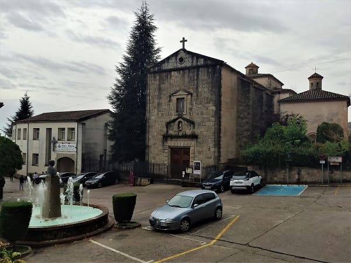
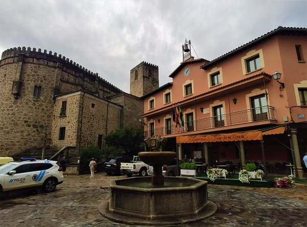
This town is remembered for being one of the towns that welcomed Carlos V before he arrived at the Yuste monastery for his retirement. While the monastery was being built he was living there, where one of his children would also live, his bastard son Jeromín.
The castle-palace of the Counts of Oropesa, where Carlos V lived, has the coats of arms of the emperor, and other heraldic shields. Today it is a national inn and its patio can be visited.
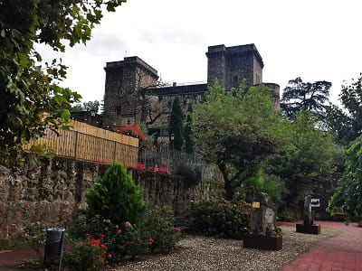
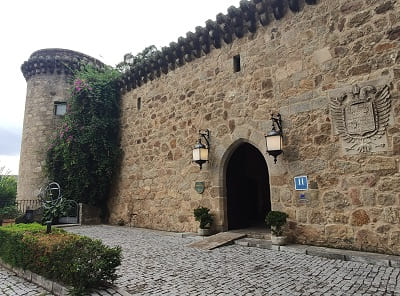
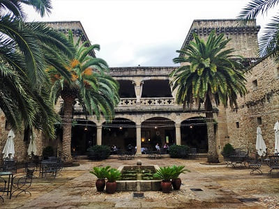
In the historic center we have a beautiful square that we see in the image and the church of the Virgen de la Soledad.
Main square and Santa Maria church, s.XIII.
15
Walled enclosure s.VIII, and ducal palace, s.XVI.
16
Main square and medieval church tower, s.XIII.
19
Main square and Manrique palace.
20
Palace of the Counts of Oropesa, s.XV.
21
Day 1, Toledo to Coria (CLICK to continue)
September 9, 2021

![[Valid RSS]](https://www.onepointsync.com/wp-content/uploads/2016/08/valid-rss-rogers.png "Validate my RSS feed")